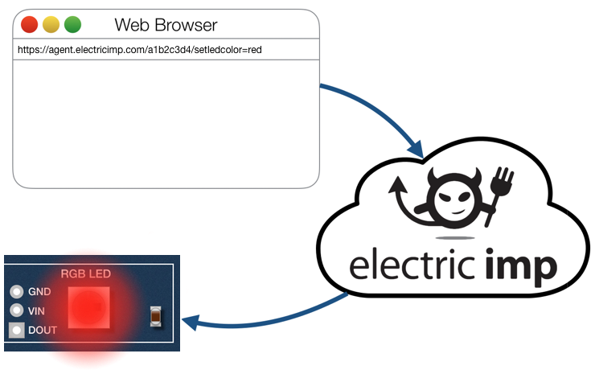

目の前にあるお持ちのデバイスを制御することはうまくいきました。ですが、Electric Impプラットフォームはそもそもコネクテッド・デバイスのためのものです。ならば、 どのようにしてデバイスを遠隔制御して、このプラットフォームの利点を享受することができるのでしょうか？そのためには、Electric Imp のエージェント技術を使う必要があります。
エージェントはデバイスごとに用意されるマイクロサーバーで、デバイスとインターネット接続されたリソースの仲介者（Mediator）として動作します。エージェントを利用して、モバイルアプリから命令を受け取り、その命令をデバイスに中継することができます。この応答として、デバイスはエージェントに天気予報のようなオンライン・サービスからの情報を取得するよう依頼するかもしれません。エージェントは外部へのリクエストを処理し、データが返却されると適切な部分のみをデバイスに送信します。これにより、特定のアイコンが画面に表示されたり、（impExplorer 自身にあるような）RGB LED を特定の色で点灯させるかもしれません。

エージェントを使って、ブラウザからデバイスを制御することができます。
エージェントは継続的に実行します。デバイスが持ち主の部屋から別の部屋に移動した時や、バッテリ電源を節約するため省電力モードに入った時など、一時的に切断された場合においてもデバイスをアクセス可能な状態にすることができます。
エージェントはサーバベースであるため、デバイスよりも高速な処理能力にアクセスすることが可能です。これにより、複雑な計算はエージェントにオフロードさせ、デバイス自身が得意とする能力、すなわち入出力制御にフォーカスさせることができます。これはデバイスがバッテリ駆動のときに特に重要になります。
最後に、セキュリティについて。エージェントのおかげで、デバイス自身はインターネット上で見える存在である必要がなくなり、その結果攻撃にさらされることが無くなります。実際、LAN 上であってもデバイスと直接通信することは不可能です。すべての通信はエージェント経由でルーティングする必要があります。もしエージェントになにかが起こっても、デバイスは引き続き動作を続けます。エージェント同士は互いに遮断されています。
もちろん、エージェントとデバイスの一方 がクラウド、他方が家庭内や仕事場といったように離れている場合、両者を互いに通信させる包括的なメッセージングシステムが必要です。このチュートリアルでは、このメカニズムとエージェントの操作方法について説明し、 前のセクションの “Hello, World” の LED を遠隔制御することを可能にしてみます。
お持ちの impExplorer に電源を入れてインターネットに接続します。まだ設定がされていない場合はこのセクションにやり方が記載されています。
この Getting Started Guide の前のセクションを終えていれば、IDE がコンピュータ上で表示されているかと思います。もし開いていない場合は ide.electricimp.com に接続して、このガイドの最初のパートで作成したアカウントを使ってサインインしてください。
前のセクションで作成した “Hello World” モデルを開いてください。‘Models’ タブを開き、マウスポインタを‘Actions’ 列にもっていきコードのアイコン () をクリックします。
例を実行するために必要なコードは以下の通りです。今回は2つのパートがあります。前回同様デバイスのためのコードがあり、さらに、エージェントのためのコードもあります。以下2つのコードリストをコピーして、それぞれ IDE ワークスペースの正しいパートに貼り付け、既存のコードを上書きしたことを確認してください。もし IDE のどちらの部分にどちらを貼り付けていいかわからない場合は、IDE のセクションに戻り思い出してください。
まずはデバイスコードから見ていきましょう。重要な行は最後の1行です。それ以外のコードは前のセクションでやったように、単に LED を点灯するかどうかを設定しているだけです。ただ今回は、LED のオン/オフを切り替えるループを実行せずに、エージェントからのメッセージに反応して状態を変更するだけです。コードの最後の行は、エージェントからメッセージ文字列 “set.led” を受け取るたびに、setLedState() 関数に実装されている LED を切り替えるコードを実行するようデバイスに指示しています。
agent.on("set.led", setLedState);これは、Electric Imp プラットフォームのイベント駆動型の別のプログラム例になります。デバイスがこのコード行に到達すると、エージェントからの “set.led” メッセージの受診時に setLedState() 関数のトリガーを引く必要があるという事実が記録されます。デバイスは setLedState() 関数を呼び出すためのメッセージが届くまで、それ以上ユーザコードを実行しません。このメソッドは、呼び出される関数への参照を記憶するだけなので、関数名の後ろにはカッコをつけません。（カッコをつけると関数が即座に呼び出され、関数に返された値をメソッドに戻すことになります。）
これは強力なアプローチです。これにより、プログラマーであるあなたが定常的に着信メッセージをチェックし、メッセージがあった時にそれが関心のあるメッセージかどうかを確認する手間を省きます。impOS があなたのために全てを行い、正しいレスポンスコードを返す作業を上記1行のコードで行います。
では、どのようにエージェントはデバイスにメッセージを送るのでしょうか？エージェントコードの15行目をご覧ください。
device.send("set.led", ledState);この行では “set.led” メッセージ （send() メソッドの最初のパラメータ）をそのエージェントに対応するデバイス（device オブジェクトとして示されています）に送信し、変数 ledState に格納されたデータ値とともにパッケージ化します。この時どのように ledState に値をセットされるか見てみましょう。まずは impExplorer がこのメッセージにどう対応するかを見てみます。デバイスコードの9行目から12行目を見てください。
function setLedState(state) {
local color = state ? [255,0,0] : [0,0,0];
led.set(0, color).draw();
}このコードでは、state 変数（true か false のいずれか）の値によって LED の表示色を設定します。値が true なら RGB の色を配列 255,0,0 に、そうでなければ 0,0,0 にします。11行目では LED の色を color 変数で指定された値にセットして、LED をその色で点灯させます。
device.send() と agent.on() の組み合わせには、impOS が特定名のメッセージに対し呼び出すように指示される関数に自動転送する単一のデータ変数が含まれます。ここでは、データは setLedState() 関数のローカル変数 state がそれにあたります。
エージェントコードの27行目には、イベント駆動プログラミングの2つ目の例が示されています。
http.onrequest(requestHandler);agent.on() に似て http.onrequest() は特定のイベントが起こったときにエージェントが呼び出す関数を登録しています。この例では HTTP リクエストが Web ブラウザから届いた場合です。そのようなリクエストがあると、エージェントは関数 requestHandler() を実行します。データはパッケージ化され、関数にパラメータとして渡します。（パラメータの1つは）httprequest オブジェクトで、入ってくるリクエストを記録します。（もう1つは）自動生成されるhttpresponse オブジェクトで、リクエストの到達やエラーが起こった場合は適切な警告（22行目参照）をエージェントが伝えるために使われます。
httprequest と httpresponse はともに imp API によって定義されたオブジェクトです。requestHandler() 関数を見ると httprequest の query プロパティを調べ、応答する必要があるかどうかを確認しています。クエリの中に led プロパティが含まれると、コードはその値を読み取りローカル変数 ledState にセットします。そして上で見たとおりデバイスにその値を送ります。より一般的には、 query プロパティには当初の HTTP リクエストの一部として送られる URL エンコードされた Key と値の全てが含まれています。これらの値には、ドット構文を使ったクエリのプロパティとして表現される Key を通じてアクセスします。
クエリに led が含まれているかに関係なく — 関心があったりなかったりする多くのパラメータが含まれているかもしれませんが — httpresponse オブジェクトを使って HTTP 標準のレスポンスコード 200 をブラウザに返します。
response.send(200, "OK");IDE の ‘Build and Run’ ボタンをクリックします。これによりエージェントコードとデバイスコードを Electric Imp の impCloud に保存して、両方のパートをインストールします。もしコードをペーストせずに、 タイピングを間違えて入力した場合、IDE は誤った構文の問題としてエラーフラグを立てます。もしエラーが実行時に検知された場合は、ログの中で報告されます。
デバイスが起動すると、ログには下記のような表示がされます。
[Status] Downloading new code; 0.73% program storage usedエージェントが起動すると、下記のようなログが記録されます。
[Agent] Turn LED On: https://agent.electricimp.com/1234abcd?led=1
[Agent] Turn LED Off: https://agent.electricimp.com/1234abcd?led=0これらはエージェントコードの最初の2行に対する応答になります。これらは imp API 関数 http.agenturl() を使ったもので、エージェントのインターネットアドレスを返します。ここのエージェント URL は固有のものなので、上の行の最後の / と ? の間の文字列は異なります。ログ画面から最初の URL をコピーしましょう。下記のような行です。
https://agent.electricimp.com/1234abcd?led=1では、新しいブラウザウィンドウのアドレスフィールドに貼り付けてください。キーボードからリターンキーを押すと、、、LED が点灯するはずです。このガイドからではなく、IDE からコピーしていることを確認ください。
単純なものですが、imp 対応デバイスをインターネットに接続し、遠隔操作をしました。最後の数字を0にして、リターンキーを押すと、今度は LED が消灯します。この URL を使うと、 職場のコンピュータ、タブレット、携帯電話、インターネットカフェのコンピュータ、他人のデバイスでさえも、 インターネット接続されたブラウザ搭載のデバイスから LED を制御することができます。
今見てきたものは単純な例です。適切なコードを使うと、ディスプレイ、センサー、制御モーターなどのデバイスに関連付けた複数の命令を組み合わせた、より複雑な HTTP リクエストをエージェントに解釈させることができます。モバイルアプリがデバイスとやり取りできるように、エージェントがサービスを提供する複雑な API を書くことができます。
これで、Electric Imp アプリケーションの基本的な構造を理解しました。あなたが外に出て自身のデバイスを作り、生活の役に立つようなコードを書く準備ができたわけです。IDE のコードライブラリを使うと、すでに書かれた沢山のソフトウェアを活用することができます。次のセクションで見ていきましょう。
次のセクション に進むか 最初のセクションに戻る